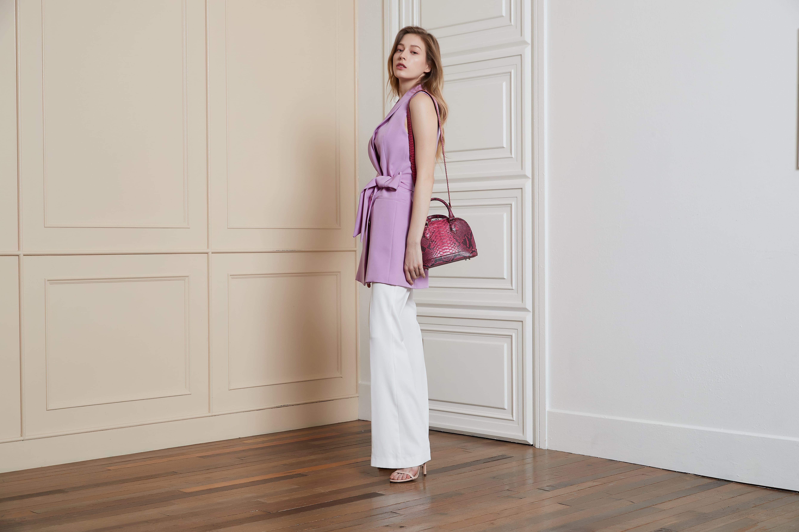
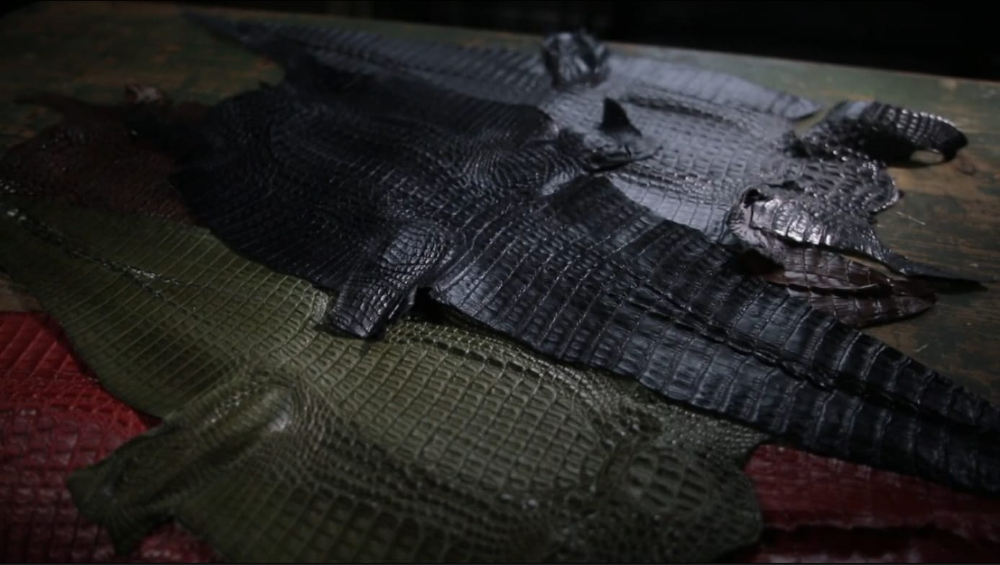

OUR MATERIALS
Signature
Leathers
자연이 만든 가장 귀한 소재만을 엄선합니다.
각 소재의 이야기를 탐색해보세요.
CROCINI 아르테사노
40 Years of Korean Craftsmanship
"가죽 한 장은 단순한 소재가 아닙니다.
— 아르테사노 대표 김병준
그것은 자연의 시간이며,
장인의 손이 더해질 때 비로소
당신만의 이야기가 됩니다."

THE BEGINNING
CROCINI(아르테사노)는 대한민국 서울, 문정동의 작은 아틀리에에서 시작되었습니다.
40년 경력의 월드클래스 장인 김병준 대표는 젊은 시절부터 오직 가죽 하나에
인생을 걸었습니다.
수십 년간 세계 각지의 최상급 소재를 연구하며 축적한 노하우는
크로커다일, 오스트리치, 파이톤이라는 세 가지 시그니처 가죽으로 꽃피었고,
이제 그 손길이 당신의 손에 닿습니다.
YEARS OF CRAFT
0월드클래스 장인의
40년 경력
HANDMADE IN SEOUL
0한 점 한 점, 손으로 완성
COLOR ATELIER
0맞춤 컬러 커스터마이징
한 점의 가방이
완성되기까지
평균 80시간
OUR PHILOSOPHY
CROCINI가 40년간 지켜온 장인 정신의 근본.
모든 제품은 40년 경력 장인의 손에서 시작해 손에서 끝납니다. 기계로는 구현할 수 없는 곡선과 솔기, 정교한 마감이 CROCINI만의 품격을 만듭니다. 한 점을 완성하는 데 평균 80시간의 공정이 투입됩니다.
크로커다일, 오스트리치, 파이톤 — 세계에서 가장 희귀한 세 가지 소재만을 엄선합니다. 장인이 직접 스킨을 선별하며, 기준에 미치지 못하는 소재는 단 한 장도 사용하지 않습니다.
모든 제품은 당신만을 위한 단 하나의 작품입니다. 원하는 컬러, 크기, 금장 디테일까지 장인과 함께 직접 설계할 수 있습니다. 세상에 하나뿐인 가방을 만드세요.

THE PROCESS
한 점의 가방이 완성되기까지 장인의 손이 거치는 공정은 40단계 이상입니다.
스킨 선별에서 재단, 봉제, 마감, 금장 설치, 최종 검수까지
어느 한 단계도 기계에 위임하지 않습니다.
이것이 CROCINI가 시간을 다루는 방식이며,
당신의 가방이 단순한 제품이 아닌
하나의 작품으로 태어나는 이유입니다.
MILESTONES
대표 김병준, 가죽 공방에서 첫 도제 생활을 시작. 크로커다일 가죽의 매력에 매료되어 평생을 가죽에 바치기로 결심.
크로커다일, 오스트리치, 파이톤 세 가지 이그조틱 가죽의 독자적인 가공 기술 완성. 국내 최초 핸드메이드 이그조틱 가죽 전문 아틀리에 개설.
서울 문정동 현재 아틀리에 이전. 연중무휴 365일 맞춤 상담 체계 구축. 주문제작 파이톤 컬렉션 런칭.
맞춤 컬러 라인 40종 이상으로 확장. 고객이 원하는 모든 컬러를 구현하는 염색 기술 고도화.
브랜드명 CROCINI로 새롭게 출발. 40년의 장인 정신을 담아, 당신만을 위한 세상에 하나뿐인 작품을 완성합니다.
OUR MATERIALS
자연이 만든 가장 귀한 소재만을 엄선합니다.
각 소재의 이야기를 탐색해보세요.
BE ONE OF A KIND
CROCINI의 모든 제품에는 장인의 40년이 담겨 있습니다.
그리고 이제, 당신의 이야기가 더해질 차례입니다.
CROCINI ATELIER · SEOUL
컬렉션을 둘러보거나, 세상에 하나뿐인
나만의 가방을 장인과 함께 설계해보세요.